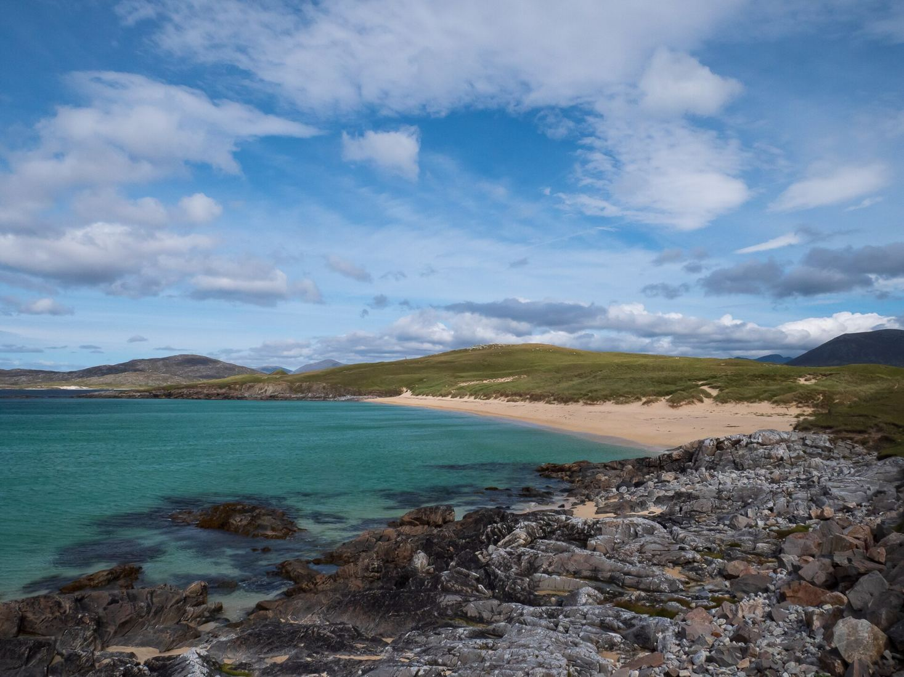
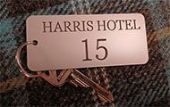
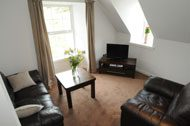
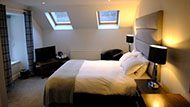
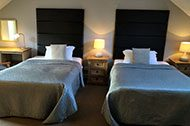
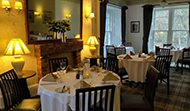
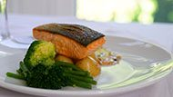

Beaches, machair and mountains
The west coast has golden beaches and flowering machair grassland. The east is rock and countless deep sea lochs. To the north rise the mountains, with An Clisham at 2,621 feet.

Photo: Thomas Andy Branson, CC BY-SA 4.0Twenty-three rooms, a garden and almost a hundred malt whiskies, in the village where the ferry from Skye comes in. Family run for more than a century.
Bed and breakfast from 1 November 2026 to 31 March 2027, excluding Christmas, New Year and January. Three nights in a Standard double from £390 for the room.
Tarbert stands on the narrow neck of land between East and West Loch Tarbert. From here the whole of Harris and Lewis is within a day's reach.
The west coast has golden beaches and flowering machair grassland. The east is rock and countless deep sea lochs. To the north rise the mountains, with An Clisham at 2,621 feet.

Harris Tweed is still woven by hand in the islands, Gaelic is spoken in the village, and the award-winning Isle of Harris Gin is made a stone's throw from the hotel, with tours of the distillery.
Far from city light, clear winter nights here can bring the northern lights over the hills. Photographers, birdwatchers, geologists and walkers all find their reason to stay longer.
All twenty-three bedrooms have been refurbished. Some are modern, others keep the traditional feel of the house. Every room has a flat-screen TV, a hairdryer and a hot drinks tray.



| Room | Double / twin | Single |
|---|---|---|
| StandardSmaller, some with hillside views | £195 | £155 |
| SelectSlightly larger, some with garden views | £205 | £165 |
| SuperiorMore modern in style | £215 | £185 |
| DeluxeLarge, with sitting area, over the front garden | £285 | £255 |
Family rooms are available, with rates depending on the number and ages of the children. All rooms are non-smoking, and we are sorry that we cannot take pets.
Guests share two sun lounges and a small TV lounge, with free Wi-Fi throughout. Walkers and cyclists are welcome, with bike storage and a drying room.


The hotel is open every day to non-residents, from morning coffee and afternoon tea with home baking to lunch and dinner from 5pm to 9pm. Booking ahead is a good idea for evening meals.
The menus use the best local ingredients: fresh fish and shellfish, lamb, beef and venison, with vegetarian and vegan options. Heading out for the day? Ask for a packed lunch for the beach or the hills.
The residents' bar holds almost a hundred malt whiskies, alongside a wine list from Corney & Barrow and Scottish gins including Isle of Harris Gin. The hotel's own bar, Tigh mo Sheanar, serves meals too.
The hotel was built in 1865 by the 7th Earl of Dunmore as a sporting retreat for anglers, and was first called the Tarbert Hotel. William Cameron took the lease in 1903 and renamed it the Harris Hotel. His family bought it in 1948, and the third and fourth generations run it today.
The visitor books go back to the 1880s. J.M. Barrie, the author of Peter Pan, signed in 1912 and etched his initials on the dining room window. You can still see them there.
The hotel is licensed for ceremonies, and the garden makes a fine setting for photographs. From mid-September to April we can seat up to 75 for a meal, or 100 for a buffet, with a function room for dancing afterwards.
CalMac car ferry from Skye straight into Tarbert.
Ferry to Leverburgh, then 40 minutes' drive north.
Ferry to Stornoway, then 60 minutes' drive south.
Loganair flies to Stornoway from Glasgow, Edinburgh, Aberdeen and Inverness.
Most of our rooms are individual, and we believe the best way to find the right one for you is to talk. That is why you won't find us on booking sites. Email or call and we will look after your reservation personally.
The hotel closes for accommodation over the winter holidays and January. Please check dates with us when you plan a winter visit, and follow @harris_hotel on Instagram for events and opening times.